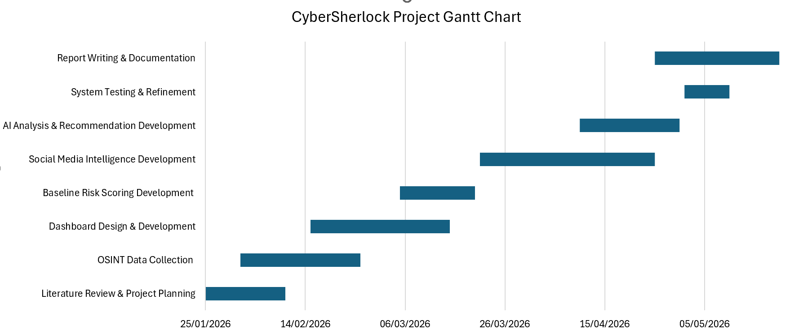
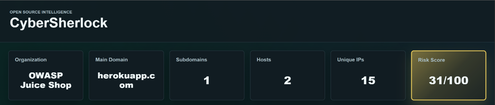
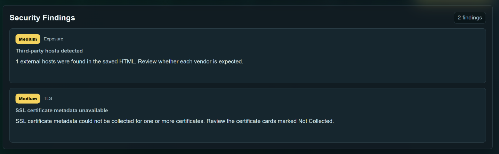
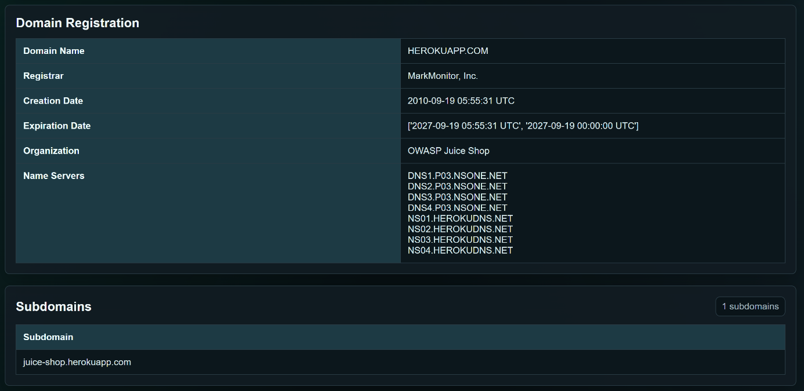
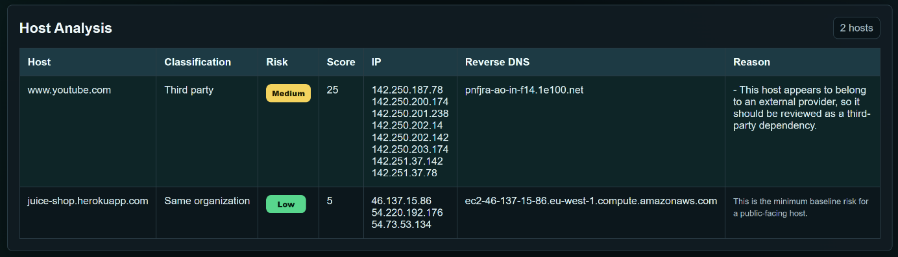
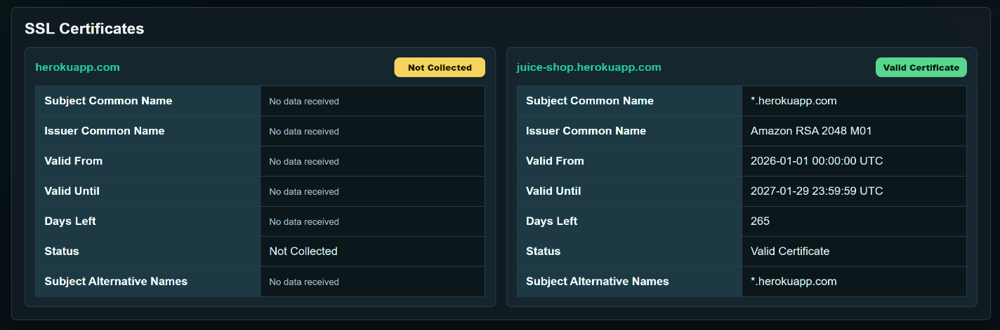
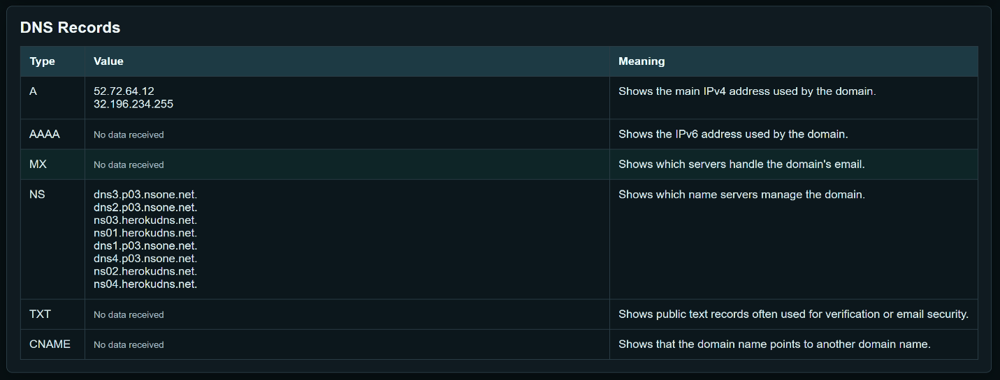
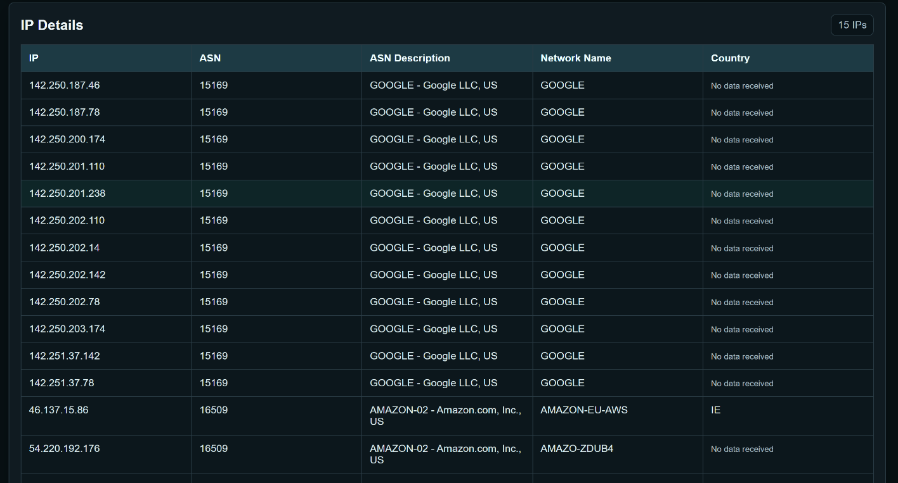

AI-Assisted External Attack Surface Management (EASM) platform that utilizes passive Open-Source Intelligence (OSINT) to map and analyze your organization's publicly exposed digital assets — without intrusion.
As organizations increasingly depend on internet-facing services, websites, APIs, cloud platforms, and third-party providers — managing and understanding external cybersecurity exposure has become more challenging than ever.
Organizations continuously publish data across websites, social media, repositories, and professional networks. This large amount of publicly accessible information creates new cybersecurity concerns as attackers can gather and correlate exposed data from multiple online sources.
Developers constantly add new websites, services, and applications while older assets may be overlooked. Digital boundaries have become dynamic due to cloud instances, forgotten subdomains, and third-party APIs — creating an invisible perimeter.
Information such as employee details, email structures, technologies, DNS records, and infrastructure-related data may unintentionally reveal valuable insights about an organization's environment to any attacker.
Without automated scoring and AI-guided recommendations, security teams cannot effectively prioritize which exposures pose the greatest risk or determine whether publicly available information may introduce cybersecurity risks.
CyberSherlock operates as a passive OSINT analysis tool that processes uploaded HTML files to collect, analyze, and present publicly available cybersecurity exposure information in a structured and user-friendly manner — without performing intrusive scanning, penetration testing, or exploitation activities.
Locally saved webpage HTML is the primary passive data source
Extracts links, hosts, scripts, forms & external references
Unique hostnames, subdomains & main domain identified
DNS, WHOIS, SSL, IP, ASN data from public sources
Severity-weighted baseline score across all findings
OWASP-aligned recommendations via AI chatbot
Each module collects, analyzes, and presents a specific dimension of your organization's external digital footprint using only publicly accessible information.
Aggregates publicly available information from DNS records, WHOIS information, SSL certificate data, IP ownership, ASN details, and reverse DNS — all without sending intrusive packets to the target.
Collects record types A, AAAA, MX, NS, TXT, and CNAME along with WHOIS registration details such as domain name, registrar, creation date, expiration date, organization, and name servers.
Shows certificate status, subject common name, issuer, validity dates, days remaining before expiration, serial number, and Subject Alternative Names (SAN) to detect misconfigurations.
Displays IP address, ASN, ASN description, network name, and country for all identified IP addresses — providing context about discovered hosting infrastructure and network ownership.
Identifies publicly exposed assets, third-party dependencies, unresolved hosts, and potentially risky external services. Shows hostname, classification, risk level, resolved IP, and reverse DNS.
Generates baseline risk scores based on collected findings and categorizes them into Low, Medium, High, and Critical severity levels — evaluating exposed hosts, third-party dependencies, and detected findings.
Collects publicly available social media information related to organizations, domains, and employees to identify exposed organizational references and information that could support social engineering.
Provides AI-assisted analysis and remediation recommendations aligned with OWASP security practices. The AI chatbot uses collected OSINT findings and baseline risk analysis to generate contextual recommendations.
CyberSherlock evaluates findings across multiple categories and assigns severity-weighted scores to produce a consolidated risk level for the organization's external exposure.
| Finding Category | Severity | Description |
|---|---|---|
| Zone Transfer Enabled | Critical | Allows full DNS namespace enumeration by attackers |
| Expired SSL Certificate | High | Certificate has passed its validity date — untrusted connection |
| SSL Certificate Expiring Soon | High | Certificate will expire within 30 days — renewal required |
| Third-Party Hosts Detected | Medium | External hosts referenced — may expand attack surface |
| WHOIS Admin Contact Exposed | Medium | Public WHOIS reveals admin email and contact information |
| Missing Certificate Information | Medium | SSL certificate data incomplete or unavailable |
| Social Media Exposure | Low | Organizational or employee data discoverable via public profiles |
| Resolved External IP Detected | Low | IP address publicly associated with target infrastructure |
The CyberSherlock dashboard presents collected OSINT data through a centralized single-page interface with organized sections, contextual explanations, and structured visual presentation.
Displays organization name, main domain, discovered subdomains, total hosts, unique IPs, and baseline risk score at a glance.

Each finding is displayed with severity level (Low / Medium / High / Critical), category, title, and a simplified explanation for users with limited technical knowledge.

Shows domain name, registrar, creation date, expiration date, organization, and name servers — alongside discovered subdomains from the saved HTML file.

Shows each discovered host with its classification, risk level, risk score, resolved IP address, reverse DNS value, and the reason behind the assigned risk.

Displays certificate status, subject common name, issuer, validity dates, days remaining before expiration, serial number, and Subject Alternative Names (SAN).

Displays record types A, AAAA, MX, NS, TXT, and CNAME with their values and a short explanation of each record type to help users understand the domain's public configuration.

Displays IP address, ASN, ASN description, network name, and country for each identified IP — providing additional context about discovered infrastructure ownership.

An interactive AI chatbot that answers security questions and provides OWASP-aligned remediation recommendations based on collected OSINT findings and baseline risk analysis.

A structured six-stage pipeline that transforms a saved webpage HTML into a complete external attack surface analysis — all using passive techniques only.
A locally saved copy of the organization's main webpage HTML file is provided as the primary data source. The Flask application verifies the file and reads its content into memory for processing.
BeautifulSoup parses the HTML and scans tags for attributes like href, src, action, data-src, and srcset. Hostnames are extracted, normalized, and deduplicated. The most-repeated registered domain is selected as the main domain.
The Passive OSINT Data Collection Module queries public APIs and databases for DNS records, WHOIS information, SSL certificate details, reverse DNS, ASN details, and IP ownership information — all without direct interaction with the target.
Collected OSINT data is analyzed to identify publicly exposed assets, third-party dependencies, unresolved hosts, and potentially risky external services associated with the target organization.
A severity-weighted scoring algorithm evaluates each finding — exposed hosts, third-party dependencies, missing information, and detected vulnerabilities — to produce a consolidated Baseline Risk Score from 0–100 with category breakdowns.
The CyberSherlock AI Security Advisor processes all findings and generates prioritized, context-aware remediation recommendations aligned with OWASP security practices to help users understand and mitigate identified risks.
The AI chatbot uses collected OSINT findings and baseline risk analysis to generate contextual, OWASP-aligned security recommendations. Below are actual interaction examples from system testing.
OWASP-aligned AI · Powered by collected OSINT findings
CyberSherlock follows ethical cybersecurity practices by relying only on passive Open-Source Intelligence (OSINT) collection methods. The platform avoids intrusive scanning, penetration testing, exploitation activities, or direct interaction with target systems.
CyberSherlock never sends probes or intrusive requests to target systems. All data is sourced from public records without generating detectable network traffic.
Operates exclusively using publicly accessible information only — no unauthorized access, no grey-area techniques, no credential harvesting.
All AI recommendations and risk assessments follow OWASP Top 10 and established security frameworks, validated before being presented to users.
Technologies Used
Upload an HTML source file and get a complete external attack surface analysis — passive, ethical, and OWASP-aligned.
🔍 Start AnalysisUniversity of Bahrain · ITCY 499 Senior Project · Passive OSINT Only · No Active Scanning · OWASP Aligned